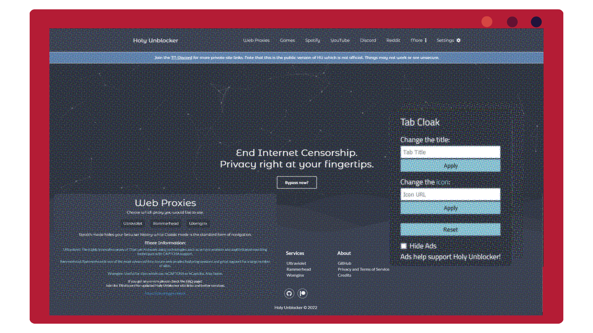
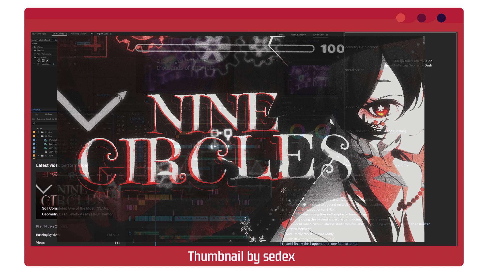
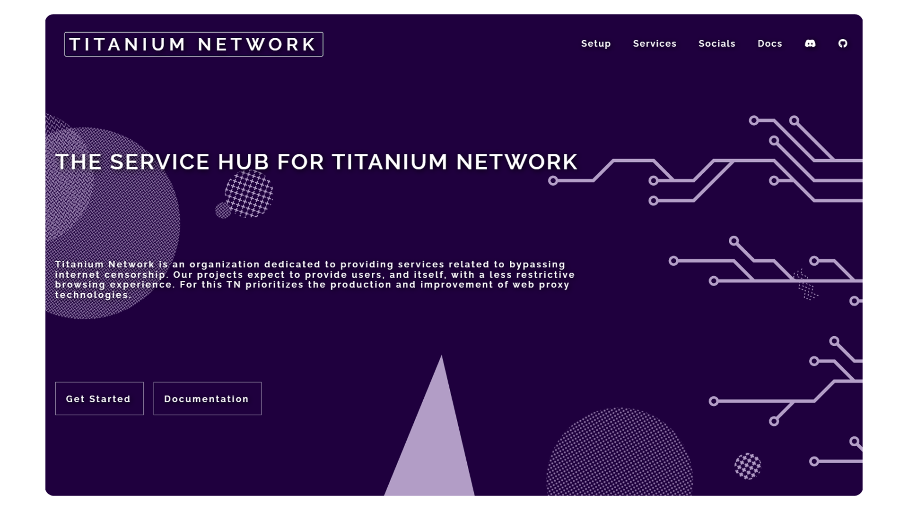
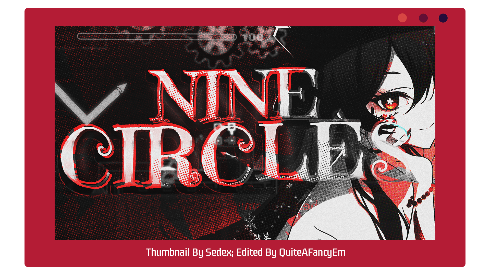
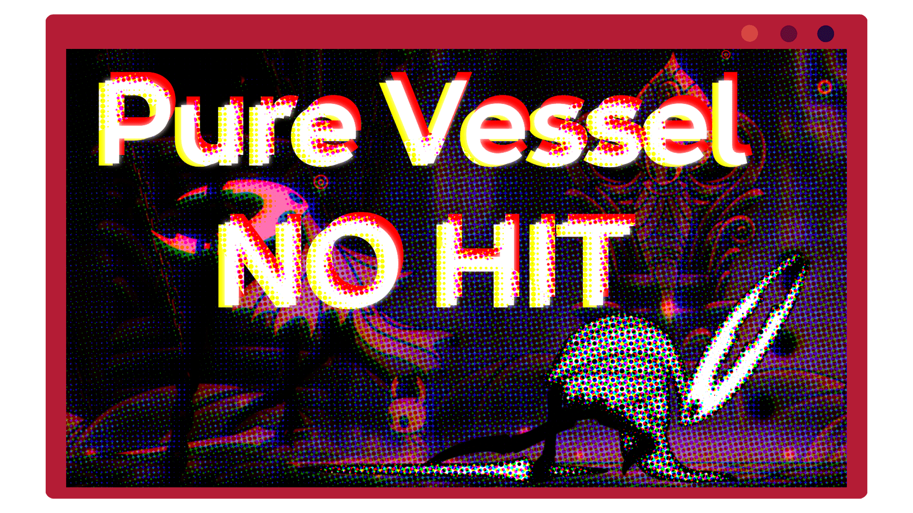
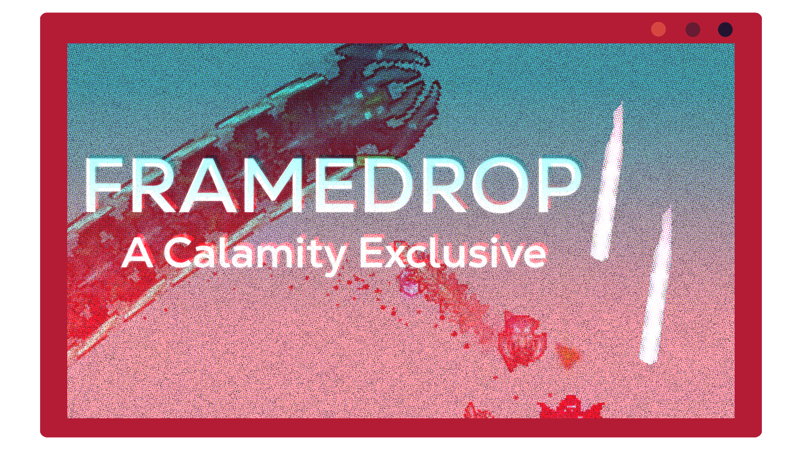
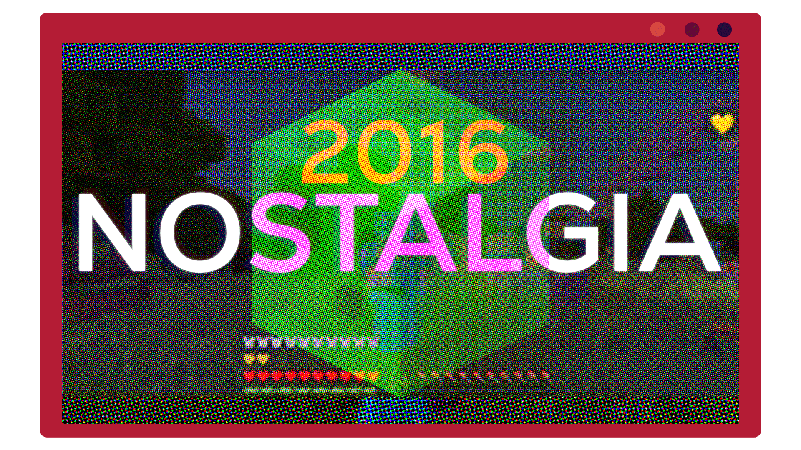

Projects
- Video Production | Web Development | Advanced Compositing -
TO BE UPDATED - 2022
-

Holy Unblocker
- Web Proxy Service -
I've worked on this project for over four years now (2020-2024). As a highly effective web proxy service, Holy Unblocker enables users to bypass web filters and access restricted websites.
With support for numerous sites, including YouTube and Discord,
Holy Unblocker is regularly updated and places a strong emphasis on design, mechanics, and features.
During its peak usage, Holy Unblocker attracted over 1 million unique users per month and received more than 10 million views per month.Service (now with new ownership): https://holyunblocker.org
GitHub: https://github.com/QuiteAFancyEmerald/Holy-Unblocker
-

Nine Circles Video
- Video Essay #1 -
This project marked my foray into professional video editing, working with artists, and scripting.
It was a challenging but enjoyable process, and I used MagicHDR for the "RTX" visual effects and stock Premiere Pro for everything else.
The final result was successful thanks to the combination of transitions, music, and visual effects.
The client for it has great UI and you can check out the shaders used here: https://reshade.meCredits:
sedex (thumbnail) - https://twitter.com/sssedex
DM DOKURO (Intro) - 64657363656E74 -the plummet
Kevin Penkin (Outro) - Pathway
Snafu - Dear Sewerslvt, Thank you
F4ely - Hu Tao Art
蒼ウサギ - https://twitter.com/AoUSA0328/status/1373972698380988418
Neko Laura - https://www.pinterest.com/pin/4081455902640682
-

Oxide
Oxide is the go-to destination for reliable and effective internet censorship bypass services.
As the official site for Titanium Network, Oxide is built using the React framework and offers a user-friendly experience for those seeking to overcome censorship. -

Oxide-Docs
As the official SDK documentation site for TitaniumNetwork, Oxide-Docs offers advanced web proxy services for developers.
Our offerings include URL rewriting proxies, webOS projects, and web-based emulation using libretro.
Our "kajigs" repository of device/OS exploits and web browser experimentations with service-workers allow us to support a diverse range of sites while prioritizing speed and optimizing resource consumption. -
Dog Hunt
Dog Hunt features its own scoring system, shaders, visual effects and of course complete gameplay.
This project was the first game I ever produced in Unity with a team!
Essentially Dog Hunt is a cool Nintendo based remake of Duck Hunt with a twist.
Throughout this project though I worked on the various UI elements and scripting.
-

Doing Nine Circles as my first demon was a mistake... [Thumbnail]
-

CALAMITY [Thumbnail]
-

Pure Vessel: No-Hit [Thumbnail]
-

framedrop.mp4 [Thumbnail]
-

minecraft late at night [Thumbnail]
-

2016 [Thumbnail]
-

Poltergeist 100% [Thumbnail]
-

More Biomes Plus
This is a mod aiming to add more biomes for a quality Terraria experience. Goal is to add in mini biomes to expand exploration a bit.
Uses tModLoader as the mod API and will be made for 1.4 Terraria.
To be updated with more completed (and good) projects!